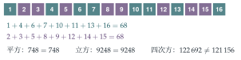

STEP I 1992，第 5 题
继续之前，请先阅读题目（原题为英文）。题目载于 STEP Support Programme 的题目资料库： step.maths.org/questions/92-s1-q5
引子
把 \(1\) 至 \(16\) 这些数分成两队，每队八个： \[\{1, 4, 6, 7, 10, 11, 13, 16\} \quad\text{和}\quad \{2, 3, 5, 8, 9, 12, 14, 15\}.\] 两队的和都是 \(68\)。两队的平方和都是 \(748\)。两队的立方和都是 \(9248\)。很难相信这不是纯粹的巧合，但它其实是一个无穷无尽的规律的第三步：只要用正确的方法把 \(1\) 至 \(32\) 分开，连四次方之和也会相等。
这个分法由 Eugène Prouhet 于 1851 年发现，而它背后的规则，即 Thue–Morse 数列（Thue–Morse sequence），出现的地方多得惊人：数论、计算理论、国际象棋，以至最公平的轮流方式。本题通过一个多项式（polynomial）及其导数（derivative）把它发掘出来。
动笔之前
若多项式 \(\mathrm{p}(x) = \sum c_kx^k\) 满足 \(\mathrm{p}(1) = 0\)，这对各系数（coefficient）有甚么含意？若 \(\mathrm{p}'(1) = 0\) 又如何？
\(\mathrm{p}(1) = \sum c_k\)，所以 \(\mathrm{p}(1) = 0\) 表示各系数之和为零。而 \(\mathrm{p}'(x) = \sum kc_kx^{k-1}\)，所以 \(\mathrm{p}'(1) = \sum kc_k\)。若所有系数都是 \(\pm1\)，这两个条件就是说：\(+1\) 与 \(-1\) 所在的位置数目相同，而且位置之和也相等。
逐步解题
阶段 1 一个三重根
把 \(1 - x^2\) 和 \(1 - x^4\) 因式分解。当中共出现多少个因式 \(1 - x\)？
由于 \(1 - x^2 = (1 - x)(1 + x)\) 及 \(1 - x^4 = (1 - x)(1 + x)(1 + x^2)\)， \[\mathrm{p}_0(x) = (1 - x)^3(1 + x)^2(1 + x^2),\] 所以 \((1 - x)^3\) 是一个因式（factor）。■
阶段 2 在 \(1\) 处的导数
若 \((1 - x)^3\) 整除 \(\mathrm{p}_0\)，那么 \((1 - x)\) 的多少次方整除 \(\mathrm{p}_0'\)？接着 \(\mathrm{p}_1 = x\mathrm{p}_0'\) 和 \(\mathrm{p}_1'\) 又如何？
写成 \(\mathrm{p}_0(x) = (1 - x)^3\mathrm{q}(x)\)。根据积法则（product rule），\(\mathrm{p}_0'(x) = -3(1 - x)^2\mathrm{q}(x) + (1 - x)^3\mathrm{q}'(x)\)，它有因式 \((1 - x)^2\)。所以 \(\mathrm{p}_0'(1) = 0\)。于是 \(\mathrm{p}_1(x) = x\mathrm{p}_0'(x)\) 同样有因式 \((1 - x)^2\)，而用相同的论证可知 \(\mathrm{p}_1'\) 有因式 \((1 - x)\)，所以 \(\mathrm{p}_1'(1) = 0\)。■
阶段 3 读出各系数
展开可得 \((1 - x)(1 - x^2) = 1 - x - x^2 + x^3\)，然后 \[\mathrm{p}_0(x) = 1 - x - x^2 + x^3 - x^4 + x^5 + x^6 - x^7.\]
以系数 \(c_k\) 表示，\(\mathrm{p}_0'(1)\) 和 \(\mathrm{p}_1'(1)\) 分别是甚么？
由于 \(\mathrm{p}_1(x) = x\mathrm{p}_0'(x) = \sum kc_kx^k\)，我们有 \(\mathrm{p}_1'(1) = \sum k^2c_k\)。系数在 \(k = 0, 3, 5, 6\) 时为 \(+1\)，在 \(k = 1, 2, 4, 7\) 时为 \(-1\)。所以 \(\mathrm{p}_0'(1) = 0\) 和 \(\mathrm{p}_1'(1) = 0\) 即是说 \[\begin{aligned} 0 + 3 + 5 + 6 &= 1 + 2 + 4 + 7 \quad (= 14), \\ 0^2 + 3^2 + 5^2 + 6^2 &= 1^2 + 2^2 + 4^2 + 7^2 \quad (= 70), \end{aligned}\] 略去 \(0\) 之后，这正是所需的恒等式。■
阶段 4 再多一个因式
要令立方和也平衡，我们需要第四个因式 \((1 - x)\)。应该用哪一个多项式取代 \(\mathrm{p}_0\)？
取 \(\mathrm{P}(x) = (1 - x)(1 - x^2)(1 - x^4)(1 - x^8)\)，它有因式 \((1 - x)^4\)。它的系数来自 \(\mathrm{p}_0(x) - x^8\mathrm{p}_0(x)\)：先是 \(0\) 至 \(7\) 的正负号规律，然后在 \(8\) 至 \(15\) 重复同一规律，但正负号全部相反： \[\begin{array}{l*{16}{c}} k & 0 & 1 & 2 & 3 & 4 & 5 & 6 & 7 & 8 & 9 & 10 & 11 & 12 & 13 & 14 & 15 \\ c_k & + & - & - & + & - & + & + & - & - & + & + & - & + & - & - & + \end{array}\] 把第 2 阶段的论证再用一次，可知对于 \(r = 0, 1, 2, 3\) 都有 \(\sum c_k k^r = 0\)。取 \(+\) 号的位置 \(\{0, 3, 5, 6, 9, 10, 12, 15\}\) 和 \(-\) 号的位置 \(\{1, 2, 4, 7, 8, 11, 13, 14\}\)。当 \(r = 1, 2, 3\) 时，来自 \(0\) 的一项为零，所以可以略去。因此以下的次序 \[a_1, \ldots, a_8 = 1, 2, 4, 7, 8, 11, 13, 14, \qquad a_9, \ldots, a_{15} = 3, 5, 6, 9, 10, 12, 15\] 符合要求：两半的和都是 \(60\)，平方和都是 \(620\)，立方和都是 \(7200\)。■
回顾
导数能侦测重根（repeated root）。因式 \((1 - x)^m\) 会迫使首 \(m - 1\) 阶导数在 \(x = 1\) 处全部为零。
先乘以 \(x\) 再求导把 \(\sum kc_k\) 变成 \(\sum k^2c_k\)，如此类推便得到更高次方。
倍增。每多一个因式 \((1 - x^{2^m})\)，长度便增加一倍，同时多一个次方达到平衡。
背后的数学
Thue–Morse 数列
\((1 - x)(1 - x^2)(1 - x^4)(1 - x^8)\cdots\) 各系数的正负号构成 Thue–Morse 数列。以 \(0\) 代表 \(+\)、\(1\) 代表 \(-\)，写出来就是： \[0\,1\,1\,0\;1\,0\,0\,1\;1\,0\,0\,1\;0\,1\,1\,0\;\ldots\] 它有三种等价的描述。
倍增：由 \(0\) 开始，不断把手上已有的部分的补（complement，即把 \(0\) 与 \(1\) 互换）接在后面：\(0 \to 01 \to 0110 \to 01101001 \to \cdots\)。
二进制数字：把 \(k\) 写成二进制（binary）时，若当中 \(1\) 的个数是偶数，第 \(k\) 项便是 \(0\)；若是奇数，便是 \(1\)。（这就是 \(x^k\) 的正负号为 \((-1)^{\text{1 的个数，取自 } k}\) 的原因：要从乘积中得出 \(x^k\)，就要选取那些在二进制中组成 \(k\) 的因子 \(x^{2^m}\)，而每一个都带来一个负号。）
多项式：\(\prod_m (1 - x^{2^m})\) 的各系数，一如题目所示。
按 Thue–Morse 数列把 \(0, 1, \ldots, 2^{N} - 1\) 分开，所得的两个集合对于每个 \(r < N\) 都有相等的 \(r\) 次方之和（图 9.7.1）。这就是 Prouhet–Tarry–Escott 问题（Prouhet–Tarry–Escott problem）：找出两个不同的整数集合，使它们的 \(r\) 次方之和在 \(r = 1, \ldots, k\) 时全部相等。Prouhet 的解用了 \(2^{k+1}\) 个数；究竟最少需要多少个数，是一个著名的未解决问题。

最公平的轮流方式
两个小孩轮流从一堆糖果中挑选，最好的先被选走。若他们以 \(ABABAB\ldots\) 的次序交替，那么每一对糖果中较好的一颗总是归 \(A\)，这是一种系统性的优势。\(ABBA\) 的次序较为公平，而 \(ABBABAAB\) 更加公平：这正是 Thue–Morse 数列，而次方和平衡恰恰就是个中原因。若糖果的价值由其位置的一个光滑函数给出，把该函数展开成多项式，便可看到 Thue–Morse 次序会把它的首几项抵销。同样的想法曾被提议用于足球的互射十二码（足球规则制定者自 2017 年起试行的“\(ABBA\)”次序），而网球决胜局的发球次序亦采用这个方式。
这个数列曾多次被人发现。Prouhet 在 1851 年用过它。Axel Thue 在 1912 年研究没有重复规律的数列时重新发现了它：它永远不会连续三次出现同一段（即它是“无立方”（cube-free）的）。Marston Morse 在 1921 年研究曲面上的测地线（geodesics）时再次发现它。而国际象棋世界冠军尤伟（Max Euwe）在 1929 年用它证明了，当时生效的重复局面和棋规则并不能防止对局无限延续下去。时至今日，它是自动数列（automatic sequences）理论中的核心例子；自动数列是指由简单机器读取 \(n\) 的二进制数字而计算出来的数列。
思维技巧
次方和是否平衡，关键在于 \(+\) 号和 \(-\) 号落在哪些位置。以这些正负号作为系数的多项式，可把这个性质转化为一个关于根的命题。
本题从头到尾都没有要求你去搜索：\(x = 1\) 处的一个重根已经包办了所有工作。利用代数来构造组合（combinatorial）对象，而不是靠反复试验去找，是大学组合数学中一再出现的想法。
延伸练习
平移。试做 STEP II 2025，第 8 题 （载于 OCR 提供下载的 2025 年试卷 zip 文件内）。该题说明怎样把一个令和与平方和平衡的分法，通过平移其中一列再合并，变成一个更大而且连立方和也平衡的分法。
平方的平方。（同样出自 STEP II, 2025。）集合 \(A = \{1, 3, 4, 5, 9, 11\}\) 和 \(B = \{2, 6, 7, 8, 10\}\) 的和相等，平方和也相等。对于每个正整数 \(n\)，把 \(\{n^2, (n + 1)^2, \ldots, (n + 11)^2\}\) 分成两个和相等的集合。（提示：把 \(0\) 加入第二个集合。）
平移不变性（translation invariance）。证明：若两个数集的 \(r\) 次方之和在 \(r = 0, 1, \ldots, k\) 时全部相等，那么把每个元素都加上同一个数 \(c\) 所得的两个集合亦然。为甚么这表示题目中的集合 \(\{1, \ldots, 15\}\) 同样可以换成任意 \(16\) 个连续整数？
公平分糖果。糖果的价值为 \(1, \frac12, \frac13, \ldots, \frac18\)。比较 \(A\) 在 \(ABABABAB\) 和 \(ABBABAAB\) 两种次序下所得的总值。
延伸阅读
Jean-Paul Allouche & Jeffrey Shallit, “The ubiquitous Prouhet–Thue–Morse sequence”，载于 Sequences and Their Applications（Springer, 1999）。综述这个数列在各处的出现；可在网上免费阅读。
Matt Parker, Things to Make and Do in the Fourth Dimension（Penguin）。内容包括等次方和及其他数字趣闻。
Joshua Cooper & Aaron Dutle, “Greedy Galois games”，American Mathematical Monthly 120 (2013)。公平轮流与 Thue–Morse 数列。